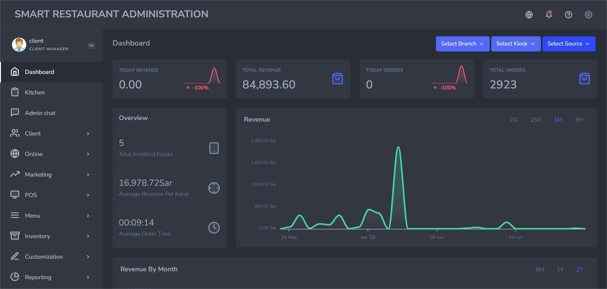
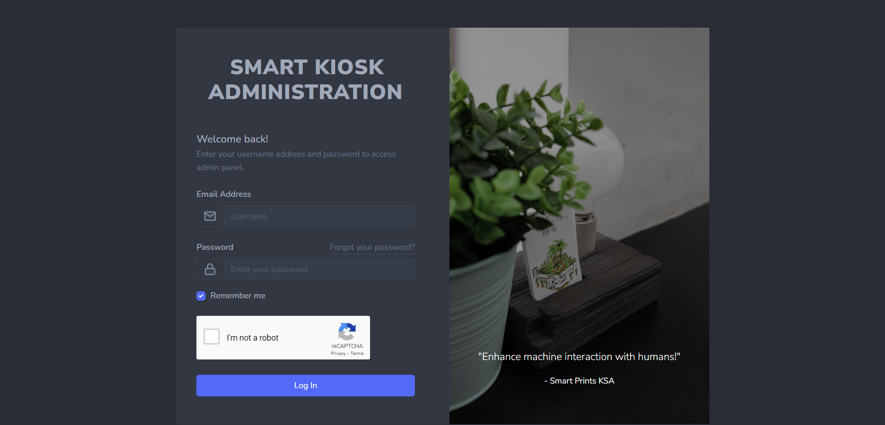
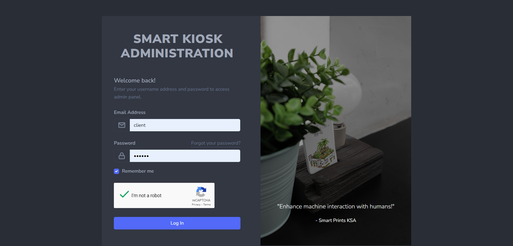
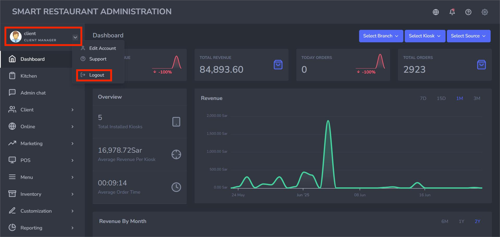

Cloud Administration
Overview
Used to manage cloud infrastructure services and multiple server instances, and also, to establish and execute the operations as per the specifications and parameters.
The cloud administration is composed of 11 sections: dashboard, kitchen, admin chat, admin chat, client, online, marketing, POS, menu, inventory, customization, and reporting, each section is reserved for a specific operation, although some of them are directly related.

Login In
To access the Smart Kiosk administration, you should follow this straightforward login process:
- Username or Email and Password: You will be handed a Client Manager account with which you will log in using your designated username or email and a secure password.
- Captcha Test: After completing the previous step, and as an additional security measure, it is necessary to complete a simple CAPTCHA test by clicking "I'm not a robot" for successful login.
- Profile (Dashboard Access): Upon successful login, you will be directed to the dashboard of the system seen below.
- Your username and your role, which is «CLIENT MANAGER»
- And many different sections to manage your cloud. The part illustrated above is called the «Dashboard», which we’ll talk about in the upcoming sections.


On the left side of the page, you can see :
Login Out
Simply follow these quick steps to log out:
- First, navigate to Profile: Your profile is located in the upper-left corner of the page, as indicated by the red underlining in the illustration image below.
- Dropdown List: Next, click the small arrow next to your profile name (framed in red), and a dropdown list appears.
- Click "Logout": From the dropdown options (Edit Account, Support, Logout), you can select "Logout."
